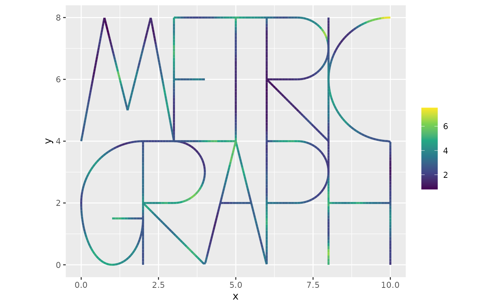
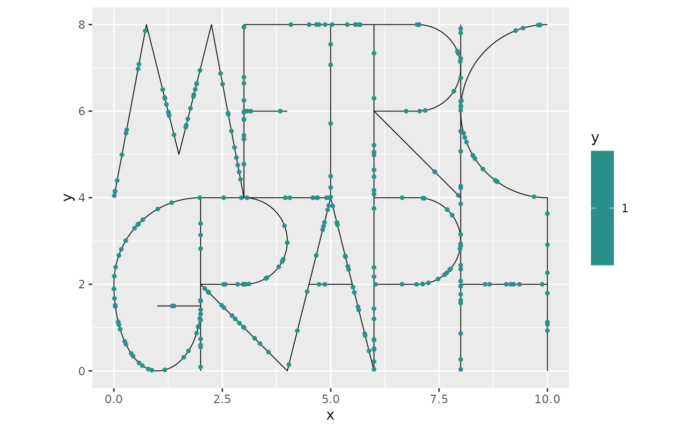
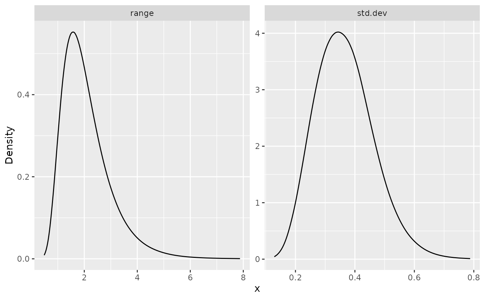
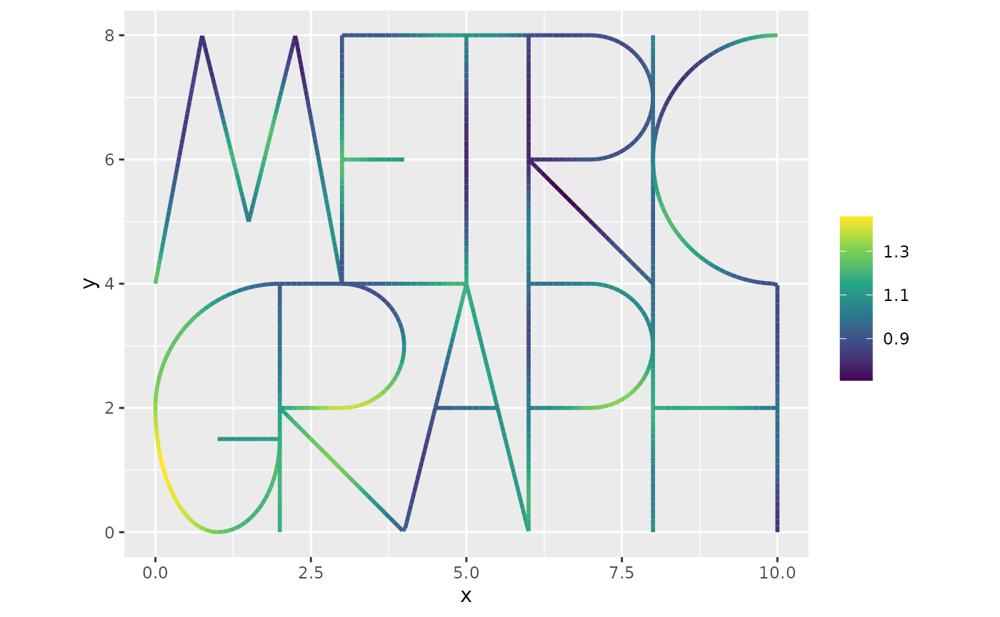
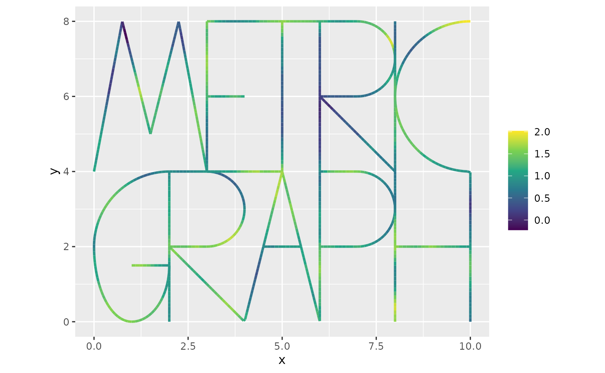

Log-Gaussian Cox processes on metric graphs
David Bolin, Alexandre B. Simas
Created: 2023-01-30. Last modified: 2023-10-28.
Source:vignettes/pointprocess.Rmd
pointprocess.RmdIntroduction
In this vignette we will introduce how to work with log-Gaussian Cox
processes based on Whittle–Matérn fields on metric graphs. To simplify
the integration with R-INLA and inlabru hese
models are constructed using finite element approximations as
implemented in the rSPDE package. The theoretical details
will be given in the forthcoming article (Bolin,
Simas, and Wallin 2023).
Constructing the graph and the mesh
We begin by loading the rSPDE, MetricGraph
and INLA packages:
library(rSPDE)
library(MetricGraph)
library(INLA)As an example, we consider the default graph in the package:
graph <- metric_graph$new(tolerance = list(vertex_vertex = 1e-1, vertex_edge = 1e-3, edge_edge = 1e-3),
remove_deg2 = TRUE)
graph$plot()
To construct a FEM approximation of a Whittle–Matérn field, we must first construct a mesh on the graph.
graph$build_mesh(h = 0.1)
graph$plot(mesh=TRUE)The next step is to build the mass and stiffness matrices for the FEM basis.
graph$compute_fem()We are now ready to specify the and sample from a log-Gaussian Cox
process model with intensity \(\lambda =
\exp(\beta + u)\) where \(\beta\) is an intercept and \(u\) is a Gaussian Whittle–Matérn field
specified by \[
(\kappa^2 - \Delta)^{\alpha/2} \tau u = \mathcal{W}.
\] For this we can use the function graph_lgcp as
follows:
sigma <- 0.5
range <- 1.5
alpha <- 2
lgcp_sample <- graph_lgcp(intercept = 1, sigma = sigma,
range = range, alpha = alpha,
graph = graph)The object returned by the function is a list with the simulated Gaussian process and the points on the graph. We can plot the simulated intensity function as
graph$plot_function(X = exp(lgcp_sample$u), vertex_size = 0)
To plot the simulated points, we can add them to the graph and then plot:
graph$add_observations(data = data.frame(y=rep(1,length(lgcp_sample$edge_loc)),
edge_number = lgcp_sample$edge_numbers,
distance_on_edge = lgcp_sample$edge_loc),
normalized = TRUE)
graph$plot(vertex_size = 0, data = "y")
Fitting LGCP models in R-INLA
We are now in a position to fit the model with our
R-INLA implementation. When working with log-Gaussian Cox
processes, the likelihood has a term \(\int_\Gamma \exp(u(s)) ds\) that needs to
be handled separately. This is done by using the mid-point rule as
suggested for SPDE models by Simpson et al. where we approximate \[
\int_\Gamma \exp(u(s)) ds \approx \sum_{i=1}^p \widetilde{a}_i
\exp\left(u(\widetilde{s}_i)\right).
\] Using the fact that \(u(s) =
\sum_{j=1}^n \varphi(s) u_i\) from the FEM approximation, we can
write the integral as \(\widetilde{\alpha}^T\exp(\widetilde{A}u)\)
where \(\widetilde{A}_{ij} =
\varphi_j(\widetilde{s}_i)\) and \(\widetilde{a}\) is a vector with
integration weights. These quantities can be obtained as
Atilde <- graph$fem_basis(graph$mesh$VtE)
atilde <- graph$mesh$weightsThe weights are used as exposure terms in the Poisson likelihiood in R-INLA. Because of this, the easiest way to construct the model is to add the integration points as zero observations in the graph, with corresponding exposure weights. We also need to add the exposure terms (which are zero) for the actual observation locations:
#clear the previous data in the graph
graph$clear_observations()
#Add the data together with the exposure terms
graph$add_observations(data = data.frame(y = rep(1,length(lgcp_sample$edge_loc)),
e = rep(0,length(lgcp_sample$edge_loc)),
edge_number = lgcp_sample$edge_number,
distance_on_edge = lgcp_sample$edge_loc),
normalized = TRUE)
#Add integration points
graph$add_observations(data = data.frame(y = rep(0,length(atilde)),
e = atilde,
edge_number = graph$mesh$VtE[,1],
distance_on_edge = graph$mesh$VtE[,2]),
normalized = TRUE)We now create the inla model object with the
graph_spde function. For simplicity, we assume that \(\alpha\) is known and fixed to the true
value in the model.
rspde_model <- rspde.metric_graph(graph, nu = alpha - 1/2)Next, we compute the auxiliary data:
data_rspde <- graph_data_rspde(rspde_model, name="field")We now create the inla.stack object with the
inla.stack() function. At this stage, it is important that
the data has been added to the graph since it is supplied
to the stack by using the graph_spde_data() function.
stk <- inla.stack(data = data_rspde[["data"]],
A = data_rspde[["basis"]],
effects = c(data_rspde[["index"]], list(Intercept = 1)))We can now fit the model using R-INLA:
spde_fit <- inla(y ~ -1 + Intercept + f(field, model = rspde_model),
family = "poisson", data = inla.stack.data(stk),
control.predictor = list(A = inla.stack.A(stk), compute = TRUE),
E = inla.stack.data(stk)$e)Let us extract the estimates in the original scale by using the
spde_metric_graph_result() function, then taking a
summary():
spde_result <- rspde.result(spde_fit, "field", rspde_model)
summary(spde_result)## mean sd 0.025quant 0.5quant 0.975quant mode
## std.dev 0.351736 0.0891498 0.198780 0.345303 0.545635 0.333059
## range 2.103150 1.3037700 0.696183 1.744360 5.601830 1.272860We will now compare the means of the estimated values with the true values:
result_df <- data.frame(
parameter = c("std.dev", "range"),
true = c(sigma, range),
mean = c(
spde_result$summary.std.dev$mean,
spde_result$summary.range$mean
),
mode = c(
spde_result$summary.std.dev$mode,
spde_result$summary.range$mode
)
)
print(result_df)## parameter true mean mode
## 1 std.dev 0.5 0.351736 0.3330591
## 2 range 1.5 2.103147 1.2728599We can also plot the posterior marginal densities with the help of
the gg_df() function:
posterior_df_fit <- gg_df(spde_result)
library(ggplot2)
ggplot(posterior_df_fit) + geom_line(aes(x = x, y = y)) +
facet_wrap(~parameter, scales = "free") + labs(y = "Density")
Finally, we can plot the estimated field \(u\):
n.obs <- length(graph$data$y)
n.field <- dim(graph$mesh$VtE)[1]
u_posterior <- spde_fit$summary.linear.predictor$mean[(n.obs+1):(n.obs+n.field)]
graph$plot_function(X = u_posterior, vertex_size = 0)
This can be compared with the field that was used to generate the data:
graph$plot_function(X = lgcp_sample$u, vertex_size = 0)
An example with replicates
Let us now test show an example with replicates. Let us first simulate replicates of a latent field
n.rep <- 30
sigma <- 0.5
range <- 1.5
alpha <- 2
lgcp_sample <- graph_lgcp(n = n.rep, intercept = 1, sigma = sigma,
range = range, alpha = alpha,
graph = graph)We now clear the previous data and add the new data together with the exposure terms
graph$clear_observations()
df_rep <- data.frame(y=rep(1,length(lgcp_sample[[1]]$edge_loc)),
e = rep(0,length(lgcp_sample[[1]]$edge_loc)),
edge_number = lgcp_sample[[1]]$edge_number,
distance_on_edge = lgcp_sample[[1]]$edge_loc,
rep = rep(1,length(lgcp_sample[[1]]$edge_loc)))
df_rep <- rbind(df_rep, data.frame(y = rep(0,length(atilde)),
e = atilde,
edge_number = graph$mesh$VtE[,1],
distance_on_edge = graph$mesh$VtE[,2],
rep = rep(1,length(atilde))))
for(i in 2:n.rep){
df_rep <- rbind(df_rep, data.frame(y=rep(1,length(lgcp_sample[[i]]$edge_loc)),
e = rep(0,length(lgcp_sample[[i]]$edge_loc)),
edge_number = lgcp_sample[[i]]$edge_number,
distance_on_edge = lgcp_sample[[i]]$edge_loc,
rep = rep(i,length(lgcp_sample[[i]]$edge_loc))))
df_rep <- rbind(df_rep, data.frame(y = rep(0,length(atilde)),
e = atilde,
edge_number = graph$mesh$VtE[,1],
distance_on_edge = graph$mesh$VtE[,2],
rep = rep(i,length(atilde))))
}
graph$add_observations(data = df_rep,
normalized = TRUE,
group = "rep")We can now define and fit the model as previously
rspde_model <- rspde.metric_graph(graph, nu = alpha - 1/2)
data_rspde <- graph_data_rspde(rspde_model, name="field", repl = ".all")
stk <- inla.stack(data = data_rspde[["data"]],
A = data_rspde[["basis"]],
effects = c(data_rspde[["index"]], list(Intercept = 1)))
spde_fit <- inla(y ~ -1 + Intercept + f(field, model = rspde_model, replicate = field.repl),
family = "poisson", data = inla.stack.data(stk),
control.predictor = list(A = inla.stack.A(stk), compute = TRUE),
E = inla.stack.data(stk)$e, verbose=TRUE)Let’s look at the summaries
spde_result <- rspde.result(spde_fit, "field", rspde_model)
summary(spde_result)## mean sd 0.025quant 0.5quant 0.975quant mode
## std.dev 0.485502 0.0159464 0.455343 0.485065 0.517977 0.48396
## range 1.571950 0.1196680 1.352000 1.566590 1.821690 1.55430
result_df <- data.frame(
parameter = c("std.dev", "range"),
true = c(sigma, range),
mean = c(
spde_result$summary.std.dev$mean,
spde_result$summary.range$mean
),
mode = c(
spde_result$summary.std.dev$mode,
spde_result$summary.range$mode
)
)
print(result_df)## parameter true mean mode
## 1 std.dev 0.5 0.4855025 0.4839597
## 2 range 1.5 1.5719509 1.5542994